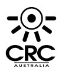

| technology |
| home page |
|  | Fielding Rob Hartill David Robinson Cliff Skolnick Randy Terbush Robert S. . Financial support for the Software System Award is provided by IBM. Thacker 1985 VisiCalc Daniel Bricklin Robert Frankston 1986 TeX Donald E. Adele Goldberg 1988 System R Donald Chamberlin James Gray Raymond Lorie Gianfranco Putzolu Patricia Selinger Irving Traiger INGRES Gerald Held Michael Stonebraker Eugene Wong 1989 PostScript John E. |
|
| GPS - Organization of GPS information is a snap with FishNet. . FishNet - Fishing Software System - Features Page FishNet (TM) Computer Software is a complete system for organizing your fishing experiences, using detailed Atmospheric and Water conditions. Dramatically improve your fishing success with FishNet (TM) . The powerful Search features of the FishNet (TM) Fishing Information Management System will give you the edge to pinpoint hotspots, forecast presentations, develop trends, and more. |